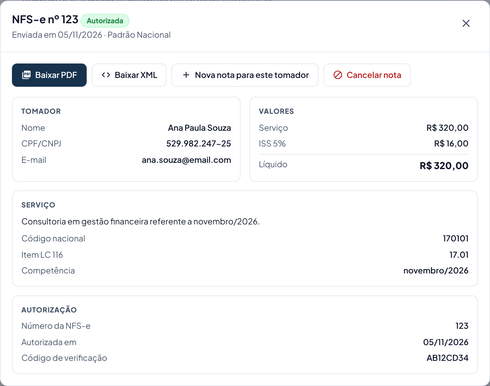
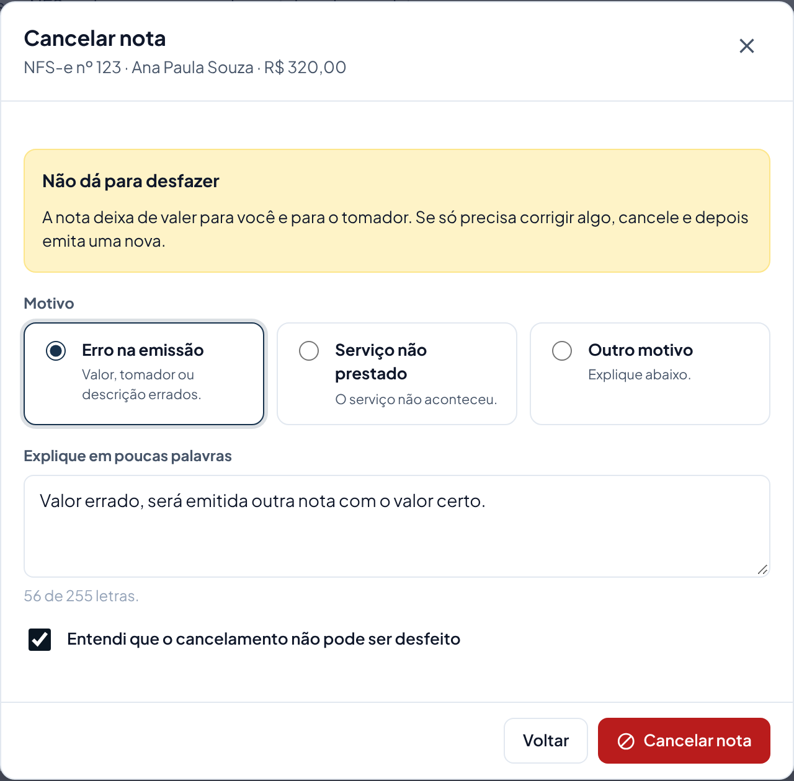
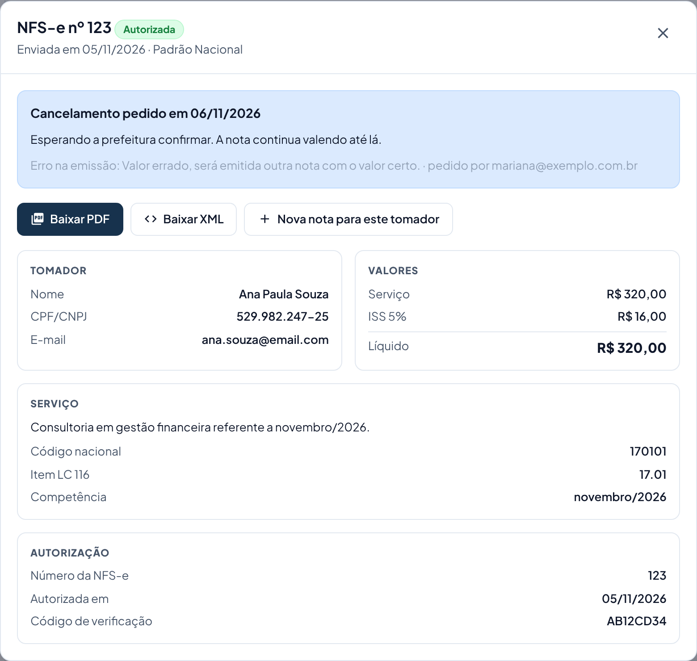

Cancelar uma nota
Para quando a nota saiu com erro ou o serviço não aconteceu. O cancelamento não pode ser desfeito.
warning Antes de começar
- Não dá para desfazer. A nota deixa de valer para você e para o tomador.
- Para corrigir uma nota, o caminho é: cancelar a errada e emitir uma nova com os dados certos.
- Só dá para cancelar nota Autorizada. Nota rejeitada não precisa ser cancelada, porque ela nunca valeu.
- Qualquer usuário da empresa pode cancelar. O sistema guarda quem pediu.
-
Abra a nota
Em Minhas notas, ache a nota (use a busca ou o filtro Autorizadas) e clique na linha dela.
-
Clique em "Cancelar nota"
O botão vermelho fica junto dos botões de PDF e XML.

-
Escolha o motivo e explique
- Erro na emissão: valor, tomador ou descrição errados.
- Serviço não prestado: o serviço não aconteceu.
- Outro motivo: qualquer outro caso.
Escreva uma frase curta (mínimo 15 letras), por exemplo: "Valor errado, será emitida outra nota com o valor certo."
Marque Entendi que o cancelamento não pode ser desfeito. Só então o botão Cancelar nota é liberado.

-
Aguarde a prefeitura confirmar
Depois de clicar, o pedido vai para a prefeitura. No detalhe da nota aparece "Cancelamento pedido". A nota continua valendo até a prefeitura confirmar; quando confirmar, o status muda para Cancelada.

-
Se era para corrigir, emita a nota nova
No detalhe, clique em Nova nota para este tomador. O tomador já vem preenchido; ajuste o que estava errado e emita. Veja Emitir uma NFS-e.
location_city Notas emitidas pelo sistema da Prefeitura de Salvador
Em Salvador, o cancelamento não é feito pelo portal, e sim no site da NFS-e de Salvador (Cancelamento › Gerar pedido). Quando a prefeitura aceitar, volte aqui, clique em Registrar cancelamento e informe o número do protocolo. A nota passa a aparecer como cancelada. Notas do Padrão Nacional seguem os passos acima.
Se der errado
| O que aconteceu | O que fazer |
|---|---|
| Não aparece o botão Cancelar nota. | A nota não está Autorizada, ou já existe um pedido de cancelamento esperando a prefeitura. |
| O botão Cancelar nota da janela está cinza. | Escolha um motivo, escreva pelo menos 15 letras e marque "Entendi que...". |
| Apareceu "A prefeitura não aceitou o cancelamento". | A nota continua autorizada. Leia o "Como resolver", corrija e peça de novo. Se não entender, mande um print para o suporte. |
| O pedido está há muito tempo esperando. | A prefeitura pode estar lenta. Espere alguns minutos. Se passar de 1 hora, fale com o suporte. |